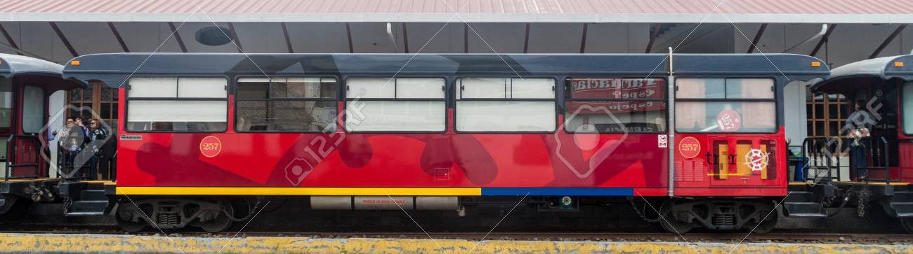

FEEP · Serie 250

General
| Año de reconstrucción | 2012 y 2014 |
| Fabricante | Carrocerías CEPSAN |
| Modelo | "250" |
| Disposición de ejes | 2-2 |
| Ancho de vía | 1.067 mm |
| Numeración | 250 a 258 |
Dimensiones y pesos
| Longitud de la caja | 13.880 mm |
| Anchura de caja | 2.540 mm |
| Altura máxima | 3.350 mm |
| Peso total | 19 t |
| Peso por eje | 4,75 t |
Cabina de pasajeros
| Capacidad | 30 sentados |
| Configuración de asientos | 2+1 |
| Climatización | 251 a 254 sí, 255 a 258 no |
| W.C. abordo | Sí |
OTRAS ESPECIFICACIONES
| Motor diésel | Generador diésel a bordo. |
| Potencia del generador | ¿? |
| Diámetro ruedas nuevas | ¿? |
| Velocidad máxima soportada | ¿? |
| Freno dinámico | No |
| Freno neumático | Aire |
| Tipo de enganche | Alliance |
.